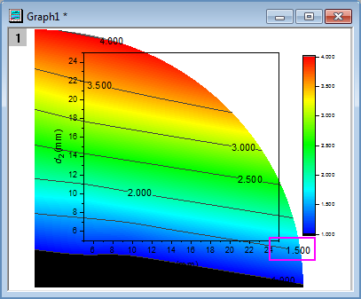

FAQ-925 なぜ等高線図から等高線のラベルが消えるのでしょうか?
最終更新日：2021/3/10
contour-label-disappear
カスタム境界での等高線
等高線に対してデータラベルが有効になっているのに一部のラベルが消えてしまうことがあります。lこれは、消えてしまっているラベルがカスタム境界の外側に配置され、グラフから切り取られていることが原因です。
カスタム境界の内側にラベルを再描画する方法
- 等高線図上でクリックしてミニツールバーを表示し、等高線ラベルを表示ボタン
 をクリックして一度オフにし、再度オンにします。または、ラベル再配置ボタンをクリックします（Origin 2021b以降）。
をクリックして一度オフにし、再度オンにします。または、ラベル再配置ボタンをクリックします（Origin 2021b以降）。
2020より前のバージョンでは、作図の詳細を開いて非表示にしてから、プロット上のすべてのラベルを再描画する必要があることに注意してください。
カスタム境界ではない等高線
等高線図にカスタム境界がないのに、一部の等高線ラベルが表示されない（あるいは、何らかの理由で消える）場合は、次のいくつかの解決策が考えられます。
バージョン2021以前
- 等高線図をダブルクリックして、作図の詳細ダイアログを開きます。
- 左側でレイヤレベルを選択し、右側でレイヤ表示方法・描画スピードタブをアクティブにします。枠でプロットを切り取るのチェックを外します。これで枠外のデータ(ラベルを含む)が表示されます。
- 
- 枠外のラベルをクリックして選択し、それからドラッグして位置をレイヤの枠内に移動します。
- すべてのラベルをレイヤの枠内に移動した後、再度作図の詳細ダイアログを開いて枠でプロットを切り取るにチェックを入れます。
バージョン2020b以降
枠でプロットを切り取る設定を操作することに加えて、以下を試してください。
- 等高線図を1回クリックしてミニツールバーを表示し、ラベルの再配置ボタンをクリックします。
- システム変数@CLEの値の変更を試してください。デフォルト値は5で、レイヤの外側の5%（レイヤーの幅/高さの5%）からラベルを除外します。また、@CLIの値の変更も試せます。これらのLabTalkシステム変数のいずれかの値を変更した場合は、グラフを1回クリックし、ミニツールバーの等高線ラベルを表示ボタンを2回クリックして、ラベルをオフにし、オンに戻します。または、または、ラベルの再配置ボタンをクリックします。
キーワード：等高線、ラベル、非表示、見えない、境界
必要なOriginのバージョン: Origin 2019